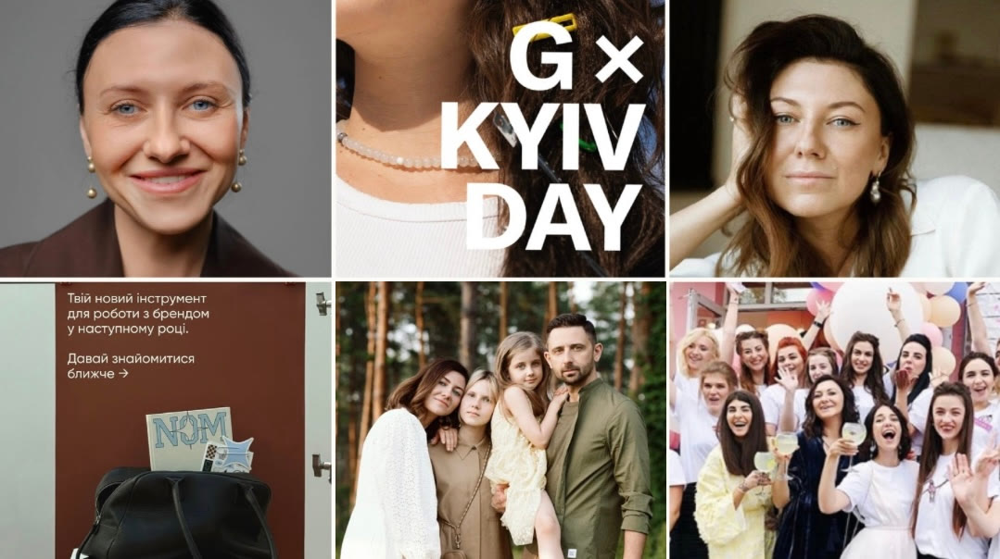
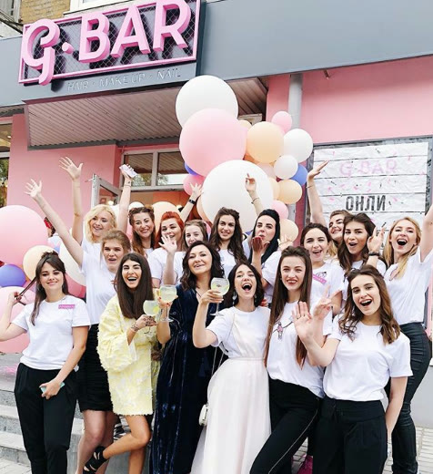
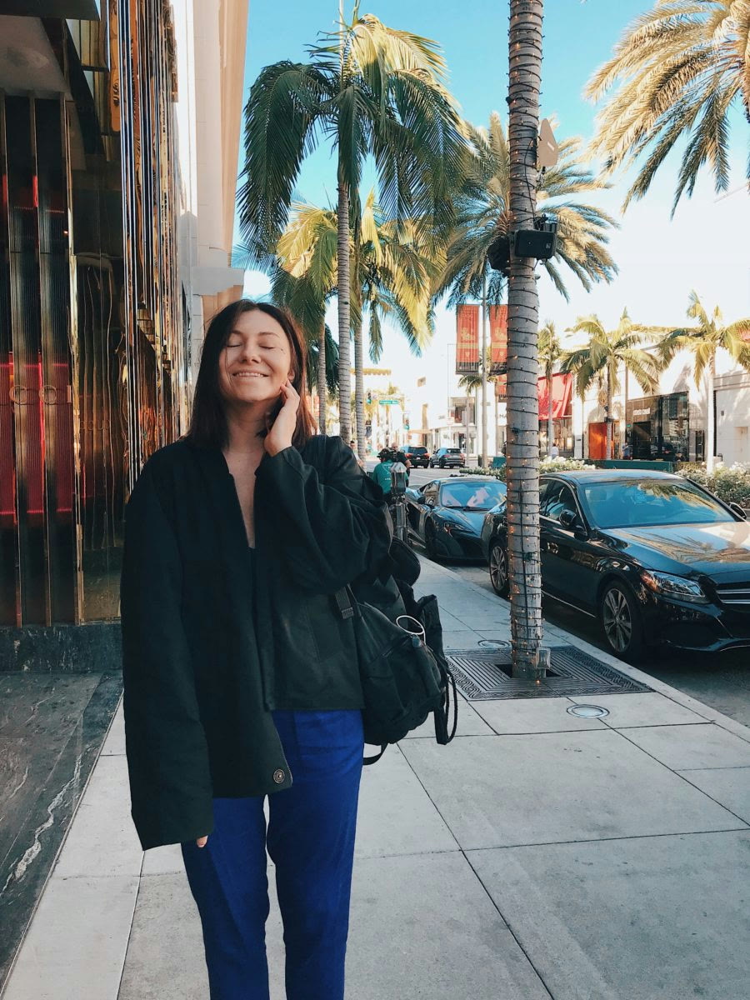
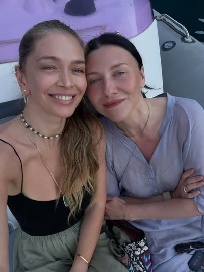
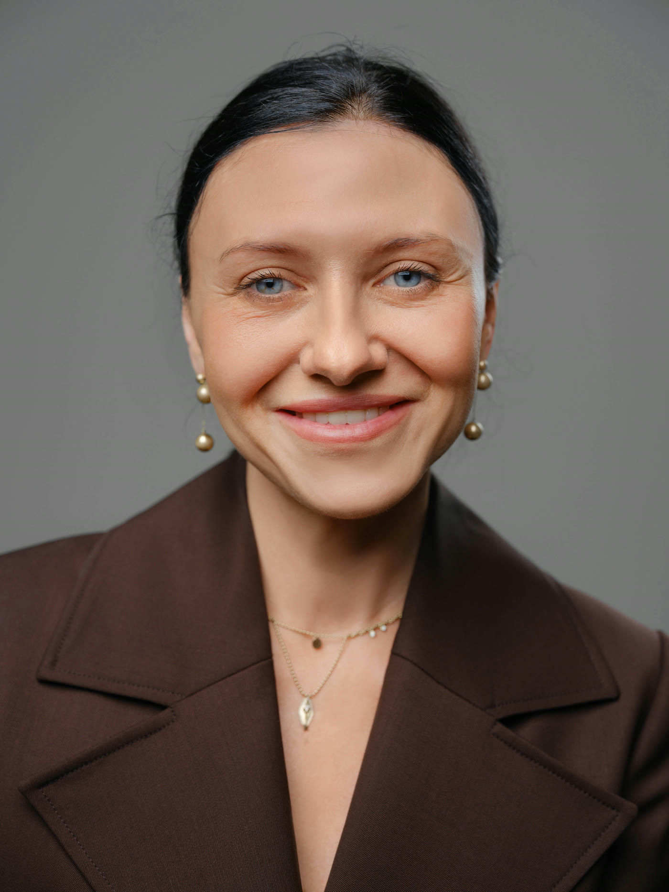
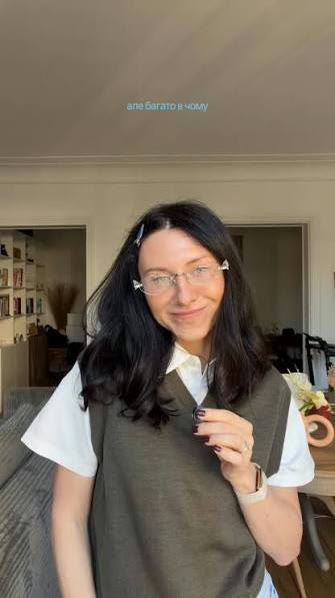
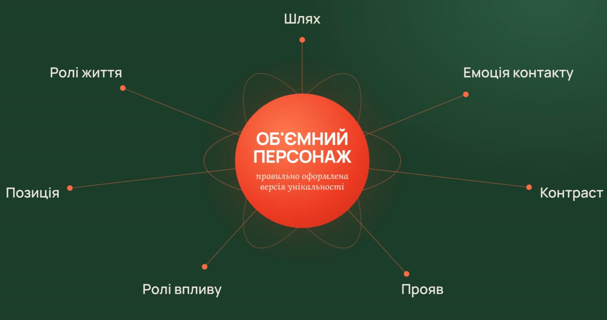
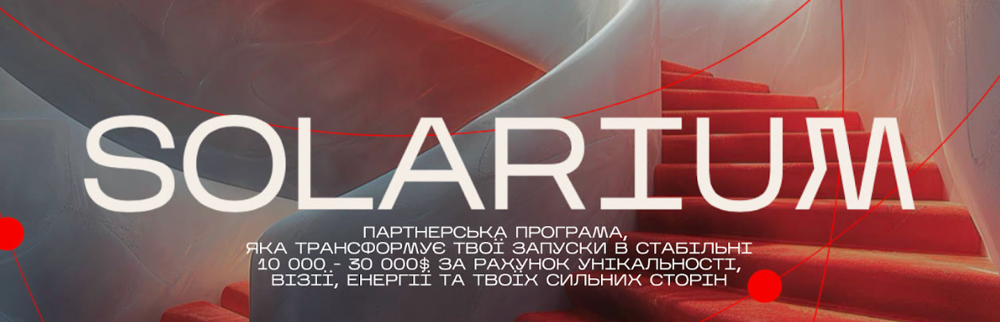

Але спочатку кілька слів про мене ♥
Моя головна сила — побачити в людині те, що вона сама часто не помічає:
- за що її насправді обирають;
- як саме вона створює результат;
- що робить її живою та впізнаваною;
- як перетворити це на сильний бренд і систему масштабування.
У цій статті я покажу, як зрозуміти свою суперсилу — на прикладі розбору Лєри Бородіної.
Пройдемо твої 7 шарів і побачимо,
з чого будувати твій бренд.
Що ти отримаєш,залишивши заявку
3 подарунки, які допоможуть тобі знайти свою унікальність і перестати зливатися з сотнею однакових експертів
Конструктор «Карта Об'ємного Персонажу»
Зробиш діагностику себе і побачиш сильні сторони й особливості, за які обирають саме тебе.
Розбір Юлії Козачкової
Стратегія особистого бренду лідерки ринку — десятки ідей одразу у свій блог.
Доступ у закритий Telegram-канал
«Ідеї для контенту»: розбори ефективних сторітелів лідерів ринку.
Хто така Лєра
Лєра Бородіна — серійна українська підприємиця, засновниця Oh My Look!, LAVLA, освітнього проєкту NOM, співзасновниця міжнародної мережі б'юті-барів G.Bar. Вона входила до списку успішних жінок України за версією Forbes Ukraine, а за її бізнесом, життям і способом мислення стежать сотні тисяч людей у соціальних мережах.

Для багатьох жінок Лєра стала не просто підприємицею, а рольовою моделлю сучасної реалізації. Вона показує, що можна створювати великі бренди, керувати командами, бути мамою, партнеркою і подругою, багато подорожувати й навчатися, масштабуватися — і при цьому не перетворювати власне життя на нескінченну гонитву.
Вона не просто навчає створювати lovemark-бренди. Вона сама створила бізнеси, якими люди користуються роками. У випадку Лєри працює принцип «швець у чоботях»: її експертність підтверджена не лише словами, а реальними продуктами, командами, клієнтами, помилками й рішеннями.
Oh My Look!, G.Bar, LAVLA та NOM — це вже наслідок. Причина — спосіб, у який Лєра бачить людей, відчуває їхні потреби, створює ідеї та перетворює їх на цілісні світи. Саме це ми й розберемо через методологію Об'ємного персонажа.
Покажу, що з твоєї особистості вже зараз працює на бренд — і чого не вистачає.
Записатися на розбір →Позиція
Те, у що людина вірить і що відстоює.
Сильний бренд починається не з продукту, а з розуміння людини та стану, який ти хочеш для неї створити.
Ця думка проходить через усі її проєкти:
- Oh My Look! виник не просто як сервіс оренди суконь. Він вирішував знайому багатьом жінкам ситуацію «мені нічого вдягнути» — тобто продавав не сукню, а можливість швидко відчути себе готовою до важливої події.
- G.Bar продавав не окремий манікюр, макіяж чи укладку. Він продавав стан: «за короткий час мене повністю зібрали, про мене подбали — і я готова йти у світ».
- NOM — це не лише набір бізнес-інструментів. Це спосіб навчити людину створювати бренд із власним баченням, сенсами й досвідом. Бренд, який люблять.

Складається враження, що Лєра майже завжди починає не з питання «Що ми можемо продати?», а з питання «Що зараз відчуває людина і що ми можемо для неї змінити?». Саме тому її бізнеси сприймаються не як випадковий набір продуктів, а як продовження однієї позиції.
На діагностиці сформулюємо твою позицію — те, у що ти віриш і що робить твій бренд впізнаваним.
Знайти свою позицію →Ролі життя
Різні сторони особистості, які роблять людину живою, а не лише експерткою.
Її ролі природно переходять одна в одну. Коли вона подорожує — це одночасно життя, час із дітьми, дослідження світу й пошук нових ідей, сервісів і технологій для бізнесу. Коли показує дітей — видно її цінності: допитливість, свободу, підтримку, бажання дати дітям більше досвіду й ширший погляд на світ.


Коли вона показує дружбу із Сабою Мусіною, аудиторія бачить близькість, підтримку, вдячність і здатність вкладатися не лише в бізнес, а й у стосунки. Навіть історія з каблучками Cartier стала впізнаваним символом їхньої жіночої дружби.
Лєра — не лише людина, яка вміє будувати бізнес. Вона вміє будувати життя навколо цінних для себе людей, сенсів і досвідів.
Тоді запрошую тебе на безкоштовний розбір зі мною.
Записатися →Ролі впливу
Те, ким людина стає для інших і яку цінність створює поруч із собою.
Рольова модель жіночої реалізації
Власним життям вона показує, що жінка може одночасно створювати масштабні проєкти, бути мамою, мати близькі стосунки, подорожувати й навчатися, піклуватися про себе й тіло, залишатися творчою, заробляти великі гроші — і не відмовлятися від своєї м'якості.
І для цього їй не потрібно ставати кимось іншим — бунтаркою, голосною чи нахабною. Лєра спокійна й романтична: вона розуміє свої сильні сторони й робить акцент саме на них, не змінюючи себе та свій характер.


Саме тому багато жінок дивляться на неї й думають: «Якщо вона змогла побудувати таке життя без відмови від себе — можливо, я теж можу».
Дослідниця
Вона багато навчається, спостерігає за ринком, подорожує, вивчає нові технології та способи роботи інших компаній — а потім переносить побачене у власні проєкти.
Вона не просто навчає жінок підприємництва. Вона розширює їхнє уявлення про те, яким взагалі може бути життя жінки, яка реалізує власні ідеї.
Розберемо твої ролі впливу — за що тебе обирають і чому до тебе повертаються.
Розібрати свої ролі →Контраст
Поєднання двох несподіваних сторін, яке робить людину живою й незабутньою.
На перший погляд Лєра дуже спокійна, м'яка, естетична, неконфліктна. Але за цією м'якістю стоїть сильний практикуючий підприємець. Вона може годину говорити про красу упаковки — а через десять хвилин обговорювати юніт-економіку, масштабування чи складні управлінські рішення.
Творець × Підприємець
Їй важливі сенси, краса, концепція та емоція людини: кожен її продукт — окремий вид мистецтва (у NOM кожен потік — новий всесвіт, до якого хочеться бути причетним: то спогади з дитинства, то улюблений фільм, то приналежність до чогось масштабного). Але вона також перевіряє ідеї попитом, тестами, цифрами й реальним досвідом клієнта.
Масштаб × Спокій
Вона створює великі проєкти й керує командами, але не будує образ людини, яка постійно поспішає, страждає та живе в хаосі.
М'якість × Вимогливість
Спокійна в комунікації — але за її брендами стоять високі стандарти продукту, сервісу та візуального виконання.
Впевненість × Відкритість до сумнівів
Вона має великий досвід, але не транслює «я вже все знаю». Навпаки — продовжує запитувати, навчатися, тестувати, змінювати рішення й визнавати, що щось може не спрацювати.
Свій контраст майже неможливо побачити зсередини — знайдемо ту саму пару сторін, яка виділить тебе.
Що ти отримаєш,залишивши заявку
3 подарунки, які допоможуть тобі знайти свою унікальність і перестати зливатися з сотнею однакових експертів
Конструктор «Карта Об'ємного Персонажу»
Зробиш діагностику себе і побачиш сильні сторони й особливості, за які обирають саме тебе.
Розбір Юлії Козачкової
Стратегія особистого бренду лідерки ринку — десятки ідей одразу у свій блог.
Доступ у закритий Telegram-канал
«Ідеї для контенту»: розбори ефективних сторітелів лідерів ринку.
Шлях
Досвід, який сформував мислення, метод і сьогоднішню версію людини.
Спочатку вона працювала в медіа, журналістиці, маркетингу та PR — довгий час допомагала просувати чужі ідеї, бачила, як працює увага, розуміла поведінку аудиторії та перетворювала ідеї на комунікацію.
Пізніше почала створювати власні проєкти. З часом її роль змінилася: від людини, яка допомагала просувати чужі ідеї, — до людини, яка створює власні бренди, продукти та цілі екосистеми.
Але найважливіше — аудиторія бачила не лише перемоги. Лєра відкрито розповідала про складні рішення, помилки, фінансові втрати, невдалі гіпотези, зміни бізнес-моделей, трансформацію власних поглядів, материнство й особисті зміни. Тому її образ будувався не за принципом «одного дня вона стала успішною» — аудиторія росла разом із нею.
Від спеціалістки, яка працювала з чужими проєктами, — до підприємиці, яка створює власні lovemark-бренди й своїм прикладом популяризує сучасне жіноче підприємництво.
Складемо з нього шлях, який доводить твою експертність сильніше за будь-які кейси.
Зібрати свій шлях →Емоція контакту
Те, що люди відчувають після взаємодії з людиною.
Після контенту багатьох підприємців хочеться більше працювати, більше заробляти, швидше масштабуватися. Після Лєри виникає інше бажання — створювати масштабно, але не втрачати себе.
- спокій;
- ясність;
- естетичне задоволення;
- цікавість;
- віра у власні ідеї;
- бажання навчатися;
- відчуття, що великий бізнес не обов'язково будується через надрив.
Якщо чіткої відповіді немає — саме з цього почнемо на безкоштовній діагностиці.
Записатися на діагностику →Прояв
Те, як персонаж стає видимим у контенті, продукті та комунікації.
Вона сама користується тим, що створює
Не продає продукт, від якого сама відокремлена: створює блокноти — користується ними; запускає нові продукти — і на вебінарі каже, що дивитиметься уроки разом з аудиторією. Це дає відчуття: «Вона не придумала це лише для продажу — вона створила те, що потрібне і їй самій».
Вона показує процес створення
В Instagram — щирий шлях, а не лише вітрина успішних запусків. Може розповісти, що гіпотеза не підтвердилася, яка послуга не зайшла, де очікування не збіглися з реальністю, що команда зараз змінює. Це підсилює образ практика.
Вона проявляє персонажа через партнерства
У контенті видно партнерів, команду, подруг, людей, із якими вона створює проєкти. Вона не будує міф «я все зробила сама» — навпаки, показує, що сильні бренди народжуються завдяки сильній команді.
Вона досліджує світ і повертає побачене в бізнес
Подорожі — не лише відпочинок: вона спостерігає, як працюють сервіси, як оформлені простори, як бренди взаємодіють із клієнтом, які технології з'являються, що можна адаптувати. Роль мандрівниці переходить у роль Дослідниці, а потім — у роль Творця.
Вона ділиться тим, що вивчає сама
На YouTube — дисципліна, внутрішня опора, як знайти щастя, як перестати хотіти подобатись усім, власне навчання. Навіть перше відео «Почни аби як» — про те, як довго вона відкладала YouTube і боялася не виправдати очікування аудиторії.
Покажу, як вбудувати твого Об'ємного персонажа в контент, продукт і продажі.
Проявити свою силу →🧩 Формула Об'ємного персонажа
Стисла «карта» особистості — зручно тримати перед очима.

Сильний бренд починається з розуміння людини, її потреб і стану, який продукт повинен для неї створити.
Підприємиця, мама, партнерка, подруга, мандрівниця, дослідниця, жінка, яка продовжує вивчати себе.
Рольова модель жіночої реалізації + Дослідниця.
М'яка та спокійна × сильна практикуюча підприємиця; творча × прагматична; масштабна × без культу поспіху.
Від роботи з чужими ідеями в медіа та маркетингу — до створення власної екосистеми lovemark-брендів.
Спокійна впевненість, натхнення, бажання створювати велике без втрати себе.
Власне користування продуктами, відкриті тести, дослідження, діалог з аудиторією, демонстрація команди й партнерств, чесні розповіді про помилки, перенесення світового досвіду у власні бренди.
За 40 хвилин пройдемо всі 7 шарів і зберемо твою власну формулу Об'ємного персонажа.
Отримати свою карту →🎯 Головний висновок
Більшість думає, що люди люблять бренди Лєри через сильний маркетинг. Але маркетинг — лише інструмент. Насправді люди довіряють способу мислення людини, яка ці бренди створила.
Саме тому в методології Об'ємного персонажа ми аналізуємо не лише продукт, контент, воронку чи візуальність — ми аналізуємо людину, яка все це створила. Тому що продукт дуже часто є продовженням особистості свого автора.
І коли людина будує бренд не навколо трендів або вигаданого образу, а навколо власної позиції, досвіду, ролей, контрастів і способу взаємодії зі світом — з'являються продукти, які не просто купують. Їм довіряють. До них повертаються. І їх люблять.
Потрібно побачити свою силу, зробити її видимою — і побудувати навколо неї систему.
Записатися на розбір →Партнерська програма SOLARIUM

Я впевнена, що у кожній людині є суперсила. Її просто потрібно знайти. Запрошую вас у свою партнерську програму SOLARIUM, де ви почнете заробляти та масштабуватися через власну унікальність, а не через копіювання чужих стратегій.
За 3 місяці я проведу вас за руку, де ми разом:
- знайдемо вашу суперсилу та те, за що вам готові платити найбільші гроші;
- зрозуміємо аудиторію та причини, через які вона обирає;
- створимо вашого Об'ємного персонажа та сформуємо сильне позиціонування;
- вбудуємо його в контент, продукт, комунікацію та продажі;
- створимо стратегію росту до стабільних $10 000–30 000, яка підсилює вас.
Чому обирають саме вас? Якою людиною вас повинна запам'ятати аудиторія? І як перетворити власну силу на медійність, сильні продукти та стабільні гроші?
Я звʼяжуся з тобою, щоб познайомитися,
розібрати твою стратегію, блог і запит.
Що ти отримаєш,залишивши заявку
3 подарунки, які допоможуть тобі знайти свою унікальність і перестати зливатися з сотнею однакових експертів
Конструктор «Карта Об'ємного Персонажу»
Зробиш діагностику себе і побачиш сильні сторони й особливості, за які обирають саме тебе.
Розбір Юлії Козачкової
Стратегія особистого бренду лідерки ринку — десятки ідей одразу у свій блог.
Доступ у закритий Telegram-канал
«Ідеї для контенту»: розбори ефективних сторітелів лідерів ринку.